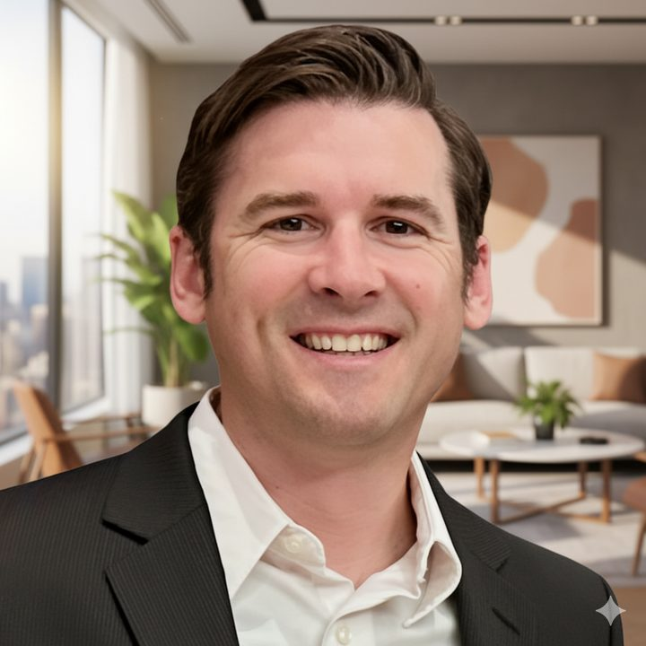

Matthew Mayer, MD, FAAP, FAAPMR
Pediatric rehabilitation expertise on long-term needs for injured children.
Triple board-certified pediatric physiatrist in active clinical practice. Objective opinions on prognosis, function, disability, and lifetime care needs. Retained by counsel nationwide.
Dr. Mayer does not offer opinions on causation, standard of care, or diagnosis.
Credentials
-
Board certifications
Pediatric Rehabilitation Medicine (2018–present), Physical Medicine & Rehabilitation (2011–present), and Pediatrics (2009–present).
-
Faculty appointment
Associate Professor of Clinical Practice, Department of Physical Medicine and Rehabilitation, University of Colorado (2016–present). Attending physician, Pediatric Rehabilitation Medicine, Children’s Hospital Colorado.
-
Years in practice
Over 15 years in pediatric rehabilitation medicine.
About
Matthew Mayer, MD, FAAP, FAAPMR is an Associate Professor in the Department of Physical Medicine & Rehabilitation at the University of Colorado School of Medicine and an attending physician in Pediatric Rehabilitation Medicine at Children’s Hospital Colorado. With over 15 years of experience in pediatric rehabilitation medicine, Dr. Mayer specializes in helping children with physical impairments achieve maximum development and independent function.
Through Pediatric Rehab Consulting, Dr. Mayer provides objective opinions on prognosis, function, disability, and lifetime care needs. He emphasizes function and quality of life, including therapy recommendations, orthotics, and adaptive equipment. Testimony and consultations are grounded in active clinical practice.
Affiliations:
University of Colorado Anschutz Medical Campus Profile
Children's Hospital Colorado Profile
Services
Serving attorneys nationwide.
- Future medical, therapy, and equipment needs
- Functional and disability assessment
- Life care plan review or physician support
- Pediatric independent medical exams, with travel to the child wherever they live in the U.S., plus an optional flat-fee exam package
- Remote or in-person depositions and trial testimony
Case types
Injuries assessed for long-term needs, prognosis, function, disability, and lifetime care:
- Birth injury and cerebral palsy
- Brachial plexus injury
- Hypoxic-ischemic encephalopathy (HIE)
- Pediatric traumatic brain injury
- Spinal cord injury
- Amputation
How to retain
- Email the parties and venue for a free conflict check. Contact Dr. Mayer
- Brief call to scope the case.
- Signed agreement and retainer.
- Records via secure link.
Fee schedule available on request.
For counsel
- Retained by both plaintiff and defense counsel
- Same fee schedule for both sides
- Active clinical practice
- Available for remote or in-person testimony nationwide
FAQ
- Do you testify on causation or diagnosis?
- No. Long-term needs, function, disability, and life care only.
- Do you travel?
- Yes, nationwide, including IMEs where the child lives.
- Remote depositions?
- Yes.
- Do you work for plaintiff and defense?
- Yes, same fee schedule.
- How do I start?
- Conflict check by email. Contact Dr. Mayer
Curriculum vitae
Education
- 1996–2000, B.A., Bryn Athyn College, Philadelphia, PA
- 2001–2005, M.D., University of Cincinnati College of Medicine, Cincinnati, OH
- 2005–2010, Double Boarded Residency Program, Combined Residencies in Pediatrics / Physical Medicine and Rehabilitation, University of Cincinnati / Cincinnati Children’s Hospital
Academic appointments
- 2016–present, Associate Professor of Clinical Practice, University of Colorado, Department of Physical Medicine and Rehabilitation, Pediatric Rehab Medicine, Children's Hospital Colorado, Aurora, CO
- 2010–2016, Assistant Professor, University of Missouri-Kansas City, Pediatric Rehab Medicine, Children’s Mercy Hospital, Kansas City, MO
Board certifications
- Board Certified in Pediatric Rehabilitation Medicine, American Board of Physical Medicine and Rehabilitation (2018–present)
- Board Certified Diplomate, American Board of Physical Medicine & Rehabilitation (2011–present)
- Board Certified Diplomate, American Board of Pediatrics (2009–present)
Contact
- Matthew Mayer, MD, FAAP, FAAPMR
- Associate Professor, Department of PM&R, University of Colorado
- Pediatric Rehabilitation Medicine, Children’s Hospital Colorado
- (720) 772-9086
- Mayer@pedsrehabconsult.com
- pedsrehabconsult.com